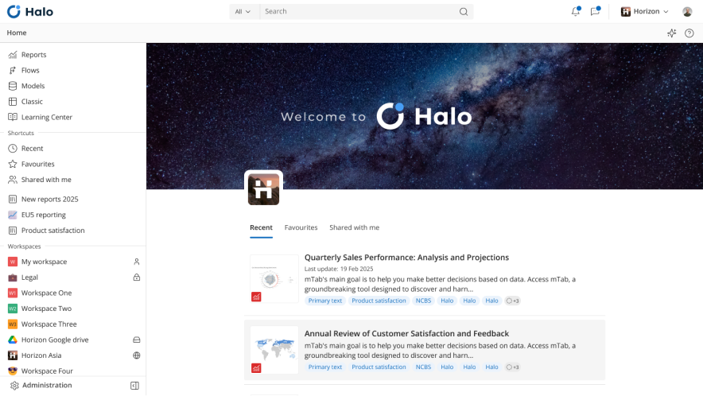
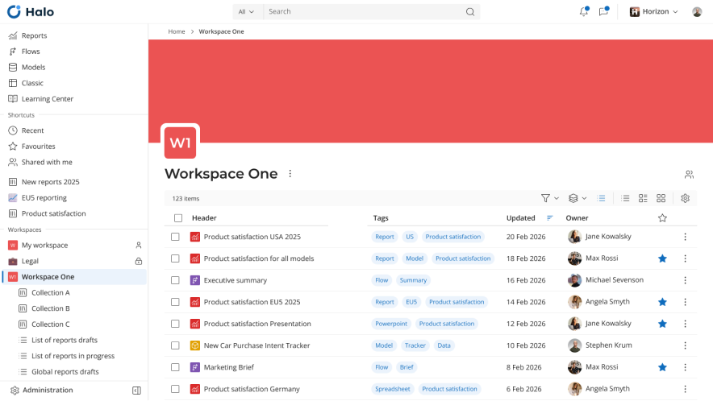
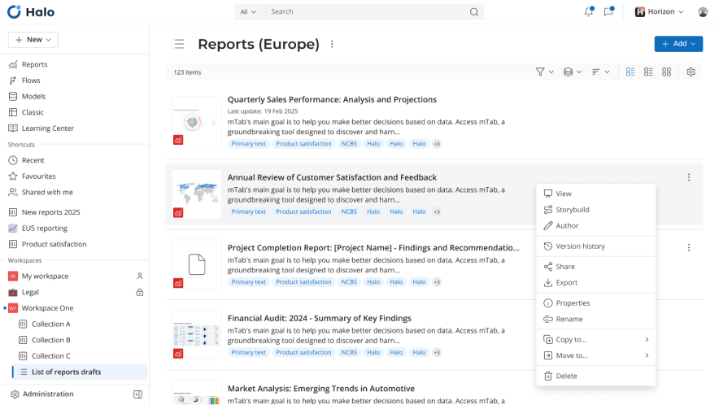
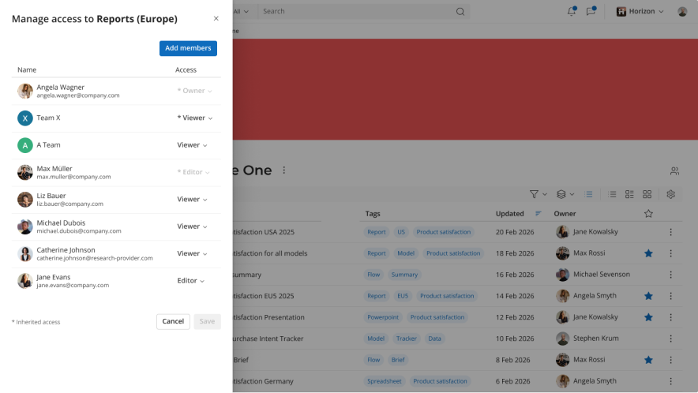
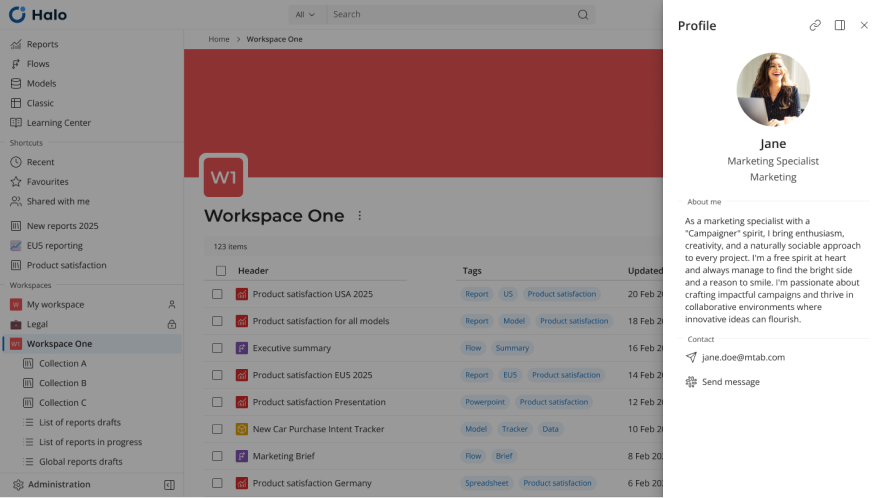
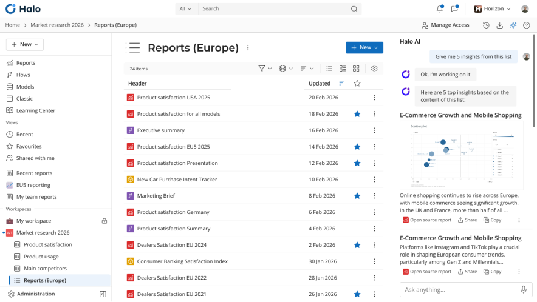

Halo
Unifying design and experience of mTab's decision intelligence platform

Overview
Halo is mTab's decision intelligence platform, providing insights tools, market research reports, and data from providers like J.D. Power, Kantar, and Ipsos — helping users make better, data-driven decisions. As Head of Design, I led the design team and the end-to-end product design process, often stepping into a product ownership role to propose and shape new features.
Challenge
Before Halo, mTab's product landscape was fragmented — several modules built over time, each operating in isolation with inconsistent patterns and no shared design language. Users, a mix of researchers, analysts, and business decision-makers, had to navigate disconnected interfaces daily. The challenge was to unify these tools into one cohesive platform without disrupting existing workflows.


Approach
Design team was working close with product starting with the most fundamental question: how do users enter and navigate a platform made up of separate applications?
The first step was designing landing page — a central hub that serves as the jumping-off point for every module in the platform. Rather than dropping users into individual tools, Halo gives them a single starting point with a clear path to whatever they need.
The second challenge was structural. Artefacts created across different modules — Reports, Flows, Models, mTab Classic — were scattered and hard to find. We designed a unified content services layer that brings all user-generated content together, making it easily discoverable, shareable, and manageable regardless of which module created it.
We reframed all existing modules as editors that are launched from Halo or from content items directly. Depending on each module's usage and technical debt, we took different paths — some editors are being rewritten from scratch, others upgraded incrementally, and some phased out entirely.
We also migrated all users into a single admin panel, which is being redesigned to offer full self-service capabilities — removing the need for manual account management. We unified platform communication through a consistent notifications system, and created user-accessible documentation to support onboarding and self-service.
Outcome
Halo transformed a collection of disconnected tools into a platform that feels like a single product.
Our Users now have one place to start, one way to find their content, and a consistent experience as they move between modules.
The unified content layer eliminated the fragmentation that previously made sharing and discovering work difficult.
The migration to a single admin panel simplified user management, and the ongoing editor rewrites are progressively modernising the platform without disrupting existing workflows.
What’s next
We're currently integrating AI into our design process — from user research and data analysis to writing specs and creating interactive prototypes — to make every stage of the workflow faster and smarter.


